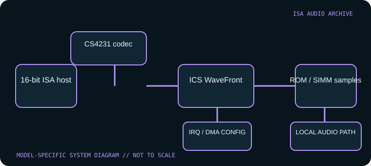

[ INDIVIDUAL COMPONENT // SOUND HARDWARE ]
Turtle Beach Tropez (TBS-2000)
The original Tropez TBS-2000 combines Crystal digital audio with ICS WaveFront wavetable synthesis. Tropez, Tropez 32 and Tropez Plus are related but not identical: the Plus uses a newer Plug-and-Play Crystal part, while the Tropez 32 denotes a larger sample-ROM variant.

Model-specific specifications
| Catalog identity | Turtle Beach Tropez TBS-2000, original Tropez. Check board number and do not infer Tropez 32 or Tropez Plus options from the family name. |
|---|---|
| Bus / host | 16-bit ISA PC-compatible host. Crystal/WSS drivers and the Turtle Beach utility suite are required; DOS support is possible but setup is more involved than a generic SB card. |
| Sound engine / I/O | Crystal CS4231 codec provides Windows Sound System and Sound Blaster/SB Pro compatibility; ICS WaveFront synthesizer drives wavetable samples. Line-level audio, mic input, game/MIDI and internal audio connectors depend on revision. |
| IRQ | Crystal codec interrupt is assigned by the model driver/configuration; use its utility’s supported setting and verify the chosen IRQ against other ISA devices. |
| DMA | PCM playback/recording uses configured ISA DMA; the codec supports separate audio streams/modes. Record the exact DMA assignments from the installed driver rather than borrowing a Tropez Plus PnP map. |
| Software / host compatibility | Turtle Beach/Crystal DOS and Windows drivers, WaveFront wavetable software and supported SB/SB Pro/WSS programs. Original Tropez setup requires correct codec resource configuration; do not install CS4232 PnP assumptions from Tropez Plus. |
| Memory / expansion | WaveFront onboard sample ROM can be supplemented/replaced by sample RAM in SIMM sockets on applicable Tropez boards. Tropez 32 and Plus capacity/options differ; count chips/sockets on the specimen. |
Compatibility & configuration notes
This card’s value is the combination of a capable WSS/SB-compatible codec and a WaveFront sample-based synthesizer; the latter is not an MPU-401 clone or the same thing as a WaveBlaster header. Preserve the exact driver set, sample-ROM/SIMM population, audio configuration and host resource map. The period driver disk is especially useful because configuration details and the software work together; a different related Tropez product can require a different codec/driver path.
- Photograph model/revision markings, resource switches or jumpers, connector panel and installed options before installation.
- For every configured IRQ, DMA channel, I/O address and driver, record the actual setting used by the host; do not rely on a family name or an assumed default.
- Power down and unplug the host before fitting or removing an ISA card; retain period setup tools and documentation with the specimen.
Sources & archival documentation
- DOS Days — Turtle Beach Tropez / Tropez 32 / Tropez PlusTropez-family differentiators, CS4231/WaveFront architecture and driver context.
- Internet Archive — original Tropez software and drivers diskArchived Turtle Beach Tropez software disk for period setup and preservation.
Where related model variants exist, the original manual and the physical card’s complete part/revision marking take precedence over generalized family summaries.